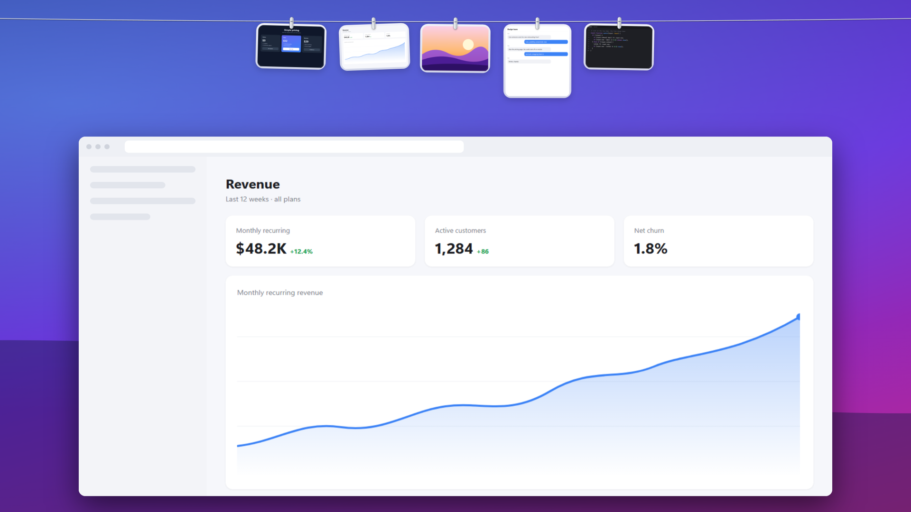
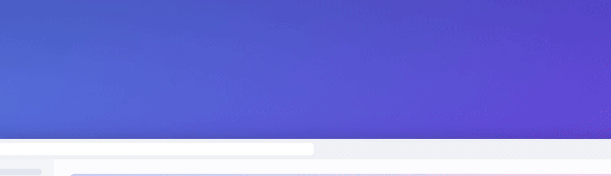
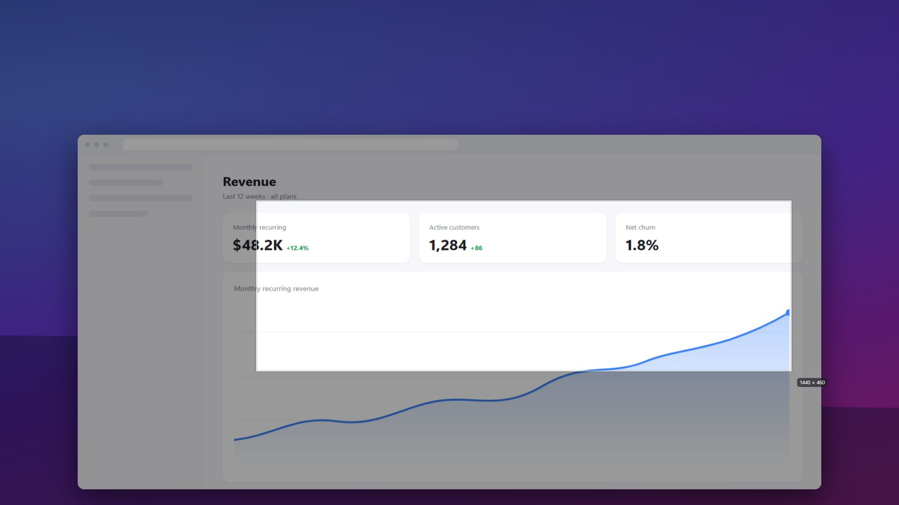
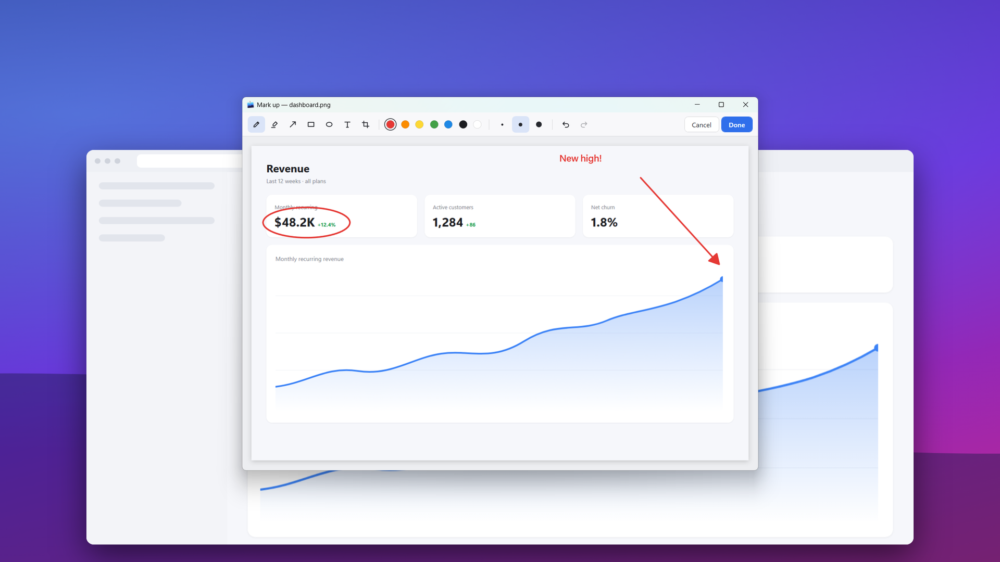

Every screenshot,
within reach.
Susharka hangs your screenshots on a clothesline at the top of the screen. Out of sight until you need them, one flick of the pointer away when you do.

How it works
Rest at the top. The line drops down.
Take a screenshot and it flies up onto the line, pegged next to the last few you took. Move the pointer away and it pulls back up, leaving your desktop clean.

Features
Small tool, no friction.
Everything you do with a screenshot is a gesture away.
Crop any region
Ctrl Shift 4, drag, done. Enter grabs the whole screen.
Click to copy
One click puts the image on the clipboard, ready to paste into chat, docs or email.
Drag anywhere
Drop into an app to share a copy, or into a folder to move the file there.
Hold to mark up
Pen, highlighter, arrows, shapes, text and crop, with undo. Saved right back to the line.
Works with Windows
Snipping Tool and Win PrtScn captures land on the line automatically.
Yours to tune
Change the shortcuts, reveal delay, number of photos and where screenshots are saved.
Capture
Freeze the screen, pick a region.
The screen freezes so menus and tooltips stay put. Drag a rectangle with a live size readout, hold Shift for a square, and the capture flies straight onto the line.

Mark up
Point things out without opening another app.
Press and hold any screenshot to annotate it. Circle the number that matters, add an arrow and a note, crop the rest, and press Done.

Cheat sheet
Gestures
On a screenshot hanging on the line:
| Do this | What happens |
|---|---|
| Click | Copies the image to the clipboard |
| Double-click | Opens it in your image viewer |
| Press and hold | Opens the markup editor |
| Drag into an app | Shares a copy; the screenshot stays on the line |
| Drag into a folder | Moves the file there |
| Hover, then × | Lets it go (the file is kept) |
| Right-click | Copy, open, mark up, show in Explorer, save as, delete |
| Ctrl Alt T | Pins the line open, or hides it |
Privacy
Your screenshots never leave your PC.
Susharka works entirely offline. Read the privacy policy.
Download
Get Susharka
Free for Windows 10 (1809) and later, 64-bit.
The installer needs no admin rights and can start Susharka when you sign in. The portable version runs from any folder. Windows SmartScreen may ask you to confirm the first run: choose More info → Run anyway.